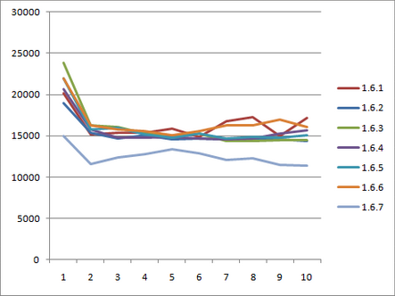
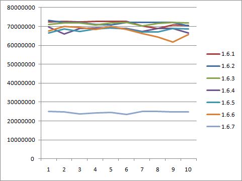

© Copyright 2009 Contributors. All rights reserved.
AspectJ 1.6.7 includes some radical internal changes. These improvements enable faster compilation, faster binary weaving, faster load time weaving and in some situations faster generated code.
Pointcut timers
Until 1.6.7 there has not really been a way to determine if it is just one of your pointcuts that is hurting your weaving performance. In 1.6.7 it is possible to turn on timers for pointcuts. These timers show the time spent in the weaver matching the pointcut components against join points. The details on this feature are here: Profiling pointcut matching. Basically by turning on the options '-timers -verbose' on the command line (or via Ant), output will be produced that looks a little like this:
Pointcut matching cost (total=6532ms for 675000 joinpoint match calls):
Time:482ms (jps:#168585) matching against
(staticinitialization(*y*.()) && persingleton(SimpleAspect))
Time:3970ms (jps:#168585) matching against
(execution(* *t*.*(*)) && persingleton(SimpleAspect))
Time:538ms (jps:#168584) matching against
(execution(* *f*(..)) && persingleton(SimpleAspect))
Time:1536ms (jps:#168584) matching against
(execution(* java.lang.CharSequence+.*e*(..)) && persingleton(SimpleAspect))
Time:4ms (jps:#662) matching against
(within(*p*) && persingleton(SimpleAspect))It shows the component, the number of joinpoints (jps) the weaver attempted to match it against and how many milliseconds were spent performing those matches. The options can also be turned on https://contraptionsforprogramming.blogspot.com/2009/11/getting-aspectj-pointcut-matching-timer.htmlthrough AJDT. Armed with this information you can optimize your pointcuts or post on the mailing list asking for help. The timers can even be turned on for load time weaving.
Faster matching
The changes to enable pointcut profiling enabled some targeted work to be done on the matching algorithms. These have remained unchanged for a few years, but in 1.6.7 have received a bit of an overhaul. 'Fast match' has been implemented for the execution() pointcut, drastically reducing weave times for heavy users of execution - more details here. The pointcut cost calculator (which is used to sort pointcuts to optimize matching speed) has been reviewed and after determining that this() ought to be considered cheaper than call() - any user combining those two pointcut designators should see an improvement (one users build time reduced from 38minutes to 6minutes with that change!).
As well as faster matching there is also less exploration to determine a match. Visitors that walk hierarchies and discover methods now terminate as early as possible once they can determine something is a match or is definetly not a match. This reduces memory usage, speeds up weaving and reduces the occurrences of those annoying 'cantFindType' messages.
aop.xml processing
The processing of include/exclude entries in aop.xml has been rewritten. It now optimizes for many more common patterns. If a pattern is optimized then there is no need to ask the weaver to do an expensive include/exclude match. More details here.
Less need to tweak options for load time weaving
A number of options were previously configurable for load time weaving that were considered experimental. These options have now been tested enough in the field that they are considered fully reliable and are on by default in 1.6.7. If you have been using either of these:
-
typeDemotion
-
runMinimalMemory
then please delete them from your weaver options section, the weaver will now do the right thing out of the box.
Benchmarking memory and performance
All those changes above, and some additional tweaks, mean we are now using less memory than ever before and getting things done more quickly.
This post discusses the details. From that article, the graph below shows the speed and memory consumption of the various AspectJ 1.6 releases when load time weaving a small application loading in Tomcat. For each of 10 iterations (x axis), the top comparison is startup time in milliseconds, the lower comparison is memory used in bytes.


Annotation binding
All those changes affect compilation/weaving but what about the code that actually runs? One user, Oliver Hoff, raised a query on the performance of annotation binding. His case uncovered an old TODO left in the code a few years ago:
// OPTIMIZE cache result of getDeclaredMethod and getAnnotation?Annotation binding has become a very common use case since that was written and 1.6.7 was the time TODO it.
The result is an optimization for the general case of binding an annotation, but also support for a new bit of syntax that aids binding of a string annotation member value - using this latter syntax generates extremely fast code.
Here are some numbers for a simple benchmark retrieving the annotation value at an execution join point in different ways. The three scenarios look like this (where the annotation type is 'Marker' and it has a String value field called 'message'):
// CaseOne: annotation value fetching is done in the advice:
pointcut adviceRetrievesAnnotation(): execution(@Marker * runOne(..));
before(): adviceRetrievesAnnotation() {
Marker marker = (Marker) ((MethodSignature)
thisJoinPointStaticPart.getSignature()).getMethod().getAnnotation(Marker.class);
String s = marker.message();
}
// CaseTwo: annotation binding is done in the pointcut, advice retrieves message
pointcut pointcutBindsAnnotation(Marker l): execution(@Marker * runTwo(..)) && @annotation(l);
before(Marker l): pointcutBindsAnnotation(l) {
String s = l.message();
}
// CaseThree: annotation binding directly targets the message value in the annotation
pointcut pointcutBindsAnnotationValue(String msg):
execution(@Marker * runThree(..)) && @annotation(Marker(msg));
before(String s): pointcutBindsAnnotationValue(s) {
// already got the string
}Before 1.6.7, case 2 was slower than case 1 and case 3 wasn’t supported syntax. The two bugs with more info are Bug 296484 and Bug 296501.
Now this is a micro benchmark, slightly unrepresentative of the real world because the advice isn’t doing anything else, but it does really stress the AspectJ binding code. For the benchmark numbers the join points advised by those advice were invoked 1,000,000 times. AspectJ 1.6.7:
Manually fetching annotation with getAnnotation(): 645ms
Binding annotation with @annotation(Marker): 445ms (was >20 *seconds* for 1.6.6, due to an extra reflection call)
Binding annotation value with @annotation(Marker(message)): 3msThe new syntax is definetly the best way to bind an annotation string value.
Bugs fixed
The complete list of issues resolved for AspectJ 1.6.7 can be found with this bugzilla query: